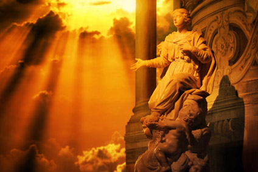

Myths and Legends about Baltic Amber
Since people learned how to use amber, at least 5 or 6 millenniums ago, numerous attempts to solve the secret of its origin have been made. Different versions, each with a unique and fantastic nature were provided in scientific works, as well as in the works of oral folk arts.
Here we’ll help you to get acquainted with the myths and legends that have come from the ancient Greeks and the people who inhabited the shores of the Baltic Sea.
Legend about two suns
Once upon a time, two suns were in the sky, not one.One of them was so huge and heavy that eventually the sky couldn’t stand the weight, causing the rays of light to fall into the sea, freezing as it fell. As it struck the sharp rocks at the bottom of the sea, crashing it into fragmented pieces. Ever since that day, the waves pick up these small and large pieces of sun stone from the bottom of the sea floor and throw them ashore.
Legend about Gauja bird
On the shores of the amber sea, in a forest thicket where no one has ever lived or even stepped foot in, amongst the impenetrable thickets and wild calls of the birdsat the edge of a wide beach filled with ramified patterns, there lived a bird known as “Gauja.” This also happens to be the name of a river which flows in the southwest of Latvia.
It isn’t known how it occurred, but thousands miles away rumors were heard about a bright blue feathered bird all the way across the seas in a Tuscany country. A hunter from this far off country sailed on a sailing vessel to the coast of the amber sea to kill the bird called Gauja.
This bird kept an amber necklace of amazing beauty in its nest.The wanderers who had ventured from this region to Tuscany told their king that each plate had its own miracle force. From one side, a lost world might be seen with its people, cities, and animals. From the other side, the forest, the sea, and the mountains could be viewed. From the third side, one could see the fields and plains, the sky, the rivers and the swans on the rivers. If a person looked on the fourth side, gardens, peach trees, and shady oak groves might be seen.
“Get the amber miracle!” the King ordered, he called upon his very best hunter and swimmer, Coso.Coso found the tree and the waylaid the blue bird, and when she flew to the sea, stole the necklace.He began to set sail, happy with his easy victory. Now on his journey across the sea, he took his trophy from his bosom and began to curiously review it. It was true. Each way he turned it new pictures began to open to him as though every small square had visited different places of the world and actually absorbed all it could see. But while the thief-hunter was hiding his find deep into his bosom, Gauja flew in, tearing his claws into his clothes and lifting the royal ambassador in the air. “What are you doing?!” begged Coso, “I will give you your toy back, but release me alive.” “Listen,” the bird Guaja answered. “Your king is the thief, and you are the thief’s lackey.You have decided to steal something that doesn’t belong to you.In your country, I would now be killed with an arrow.But it is another country with its own rules. Throw the necklace out and I will then lower you into your sailboat. Having heard such words, Coso began to cheer up and offer a ransom. Then, without having listened to all of his offers, Gauja said, “The thing you are hiding under your shirt is a gift of the earth for its people.It really is so. But the person with long hands may not possess it, it is the one who is hard-working and who can manage to get this stone using his wisdom and labor.” With these words, the brilliantly blue Gauja unclenched its claws as the royal ambassador plunged down into water.Even though the necklace wasn’t heavy, it managed to pull the thief to the bottom of the sea. Frightened Coso threw the necklace hastily, and the muddy bottom immediately shrouded the golden stone, sucking it in. The thief swum out and reached his boat, getting aboard, and after wagging his finger at the bird, directed it to sail south. The light breeze picked up the small boat, rushing to return home. The king of Tuscany was enraged upon his return, impaling Coso to his death. Many years passed, with people settling on the coast of the amber sea. They plowed the land and burned the coal as the sea gave fish to the fisherman and the fisherwomen enjoyed the benefits of the semi-precious stone. The legend about Gauja and Coso is passed from one generation to another but no one saw the amber necklace; it didn’t float onto the surface. Elders say that every amber stone of the necklace took root in the muddy bottom and the tree has grown in its place. Crystal candles grow on its branches, secreting the drops similar to tears. This tree weeps for Gauja, who has left the region forever. And every drop, falling into fisherman or fisherwoman hands, turns into amber to tell them about the strange worlds which were seen by the amber, remembering to tell the people about them.
Legend about Jurate
This was at a time so long ago, when the god Perkunas (Perun) was above all the gods and the goddess Jurate lived at the bottom of the Baltic Sea in the amber castle. In a small village on the seashore, there lived a beautiful and strong fisherman named Kastytis. When he went out to the sea to go fishing, he sang songs so beautifully that Jurate listened to those songs. Kastytis threw his nets directly over the roof of the Jurate’s castle; the goddess warned him, but he did not heed her cautions.
The goddess fell in love with the mere mortal fisherman for his courage, beauty and songs, taking him to her underwater amber castle. But their happiness was short. Perkunas learned that immortal Jurate broke the sea law, having fallen in love with the earth man. The great god struck the castle with his lightning, destroying it and ordering Jurate to be chained to its ruins forever. He then ordered the waves to rock Kastytis to sleep.
Since then, Jurate continues to weep for Kastytis and the sea, sighing heavily while her tears wash ashore in the form of small amber pieces, pure and light, as the love of the goddess to the fisherman.The large pieces of amber that wash up are the fragments of Jurate’s amber castle, destroyed by Perkunas.
Ancient Greek legend about Phaethon
Once upon a time, Clemene, the daughter of the goddess of the sea Fedita, had a son whose name was Phaethon. Helios, the god of the sun, was his father. Many people didn’t believe it, insisting that Phaethon was the son of a mere mortal man. The young man then decided to go to Helios to learn the truth himself. The god of the sun took Phaethon to his magnificent celestial palace, consoling him and revealing that he really was his father. And to confirm it, he suggested that Phaethon make any wish he’d like to come true.
Phaethon then asked for permission to pass once through the sky in the golden chariot of Helios.His father was horrified at his request; after all, not one of the gods, even Zeus, could stand fast on his chariot. He asked Phaethon request something else, but the boy continued to persist. Helios couldn’t refuse his oath. He fulfilled all of the necessary preparations, once again asking his son to give up his plan, which was virtually sending him to certain death. But Phaethon didn’t listen. He had already grabbed the reins, and exulting in the adventure, directed the golden chariot harnessed with fiery horsestoward the sky.
ButthedelightofHelios’sonwasshort. He had no forces to cope with rushing horses. They raced off without the feeling a strong hand of rider, uphill and down dale, losing the usual way. The fiery chariot flew down too close to the earth, with its flames setting fire to the earth’s surface, including woods, fields, and cities. The rivers and the seas all dried up from scorching heat. And then Gaia, the goddess of Earth, asked Zeus to save at least the things which remained on the earth still unscathed.
Zeus heard the sounds of the commotion and looked to see what was happening with the earth; with one blow of lightning he broke the fiery chariot. Horses raced, running in different directions.And the burning Phaethon fell from the sky into the river Eridan. Nymphs retrieved his body and buried it ashore. Unfortunately,
Clemenehad been looking for her son for a long time; once having found his tomb, she wept over it bitterly. Together with her daughters, the Heliades, they cried over the tomb of Phaethon. These children of the sun and their mother cried long and inconsolably until the great gods turned the Heliades into poplars. But also in the guise of poplars, they continued crying, dropping pitch drops into the waters of the river Eridan which eventually stiffened from the cold water and turned into golden, transparent amber pieces…